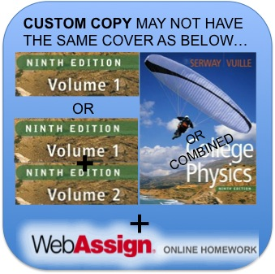

PHY 101 - College Physics I
All material presented here is intended for students of Suffolk County Community College ONLY.
Do NOT use/copy/reproduce it otherwise.
Announcements
WEATHER related problems: We obey cancellations announced on the front-page of the college website. Make sure you have registered for the college emergency announcement service with an e-mail or phone number.
LABS: If you miss more than 2 lab reports you will fail the course (see Course Outline). Lab attendance is based on the completion of the experiment and the required lab report. You cannot submit a lab report if you were not present during the experiment.
E-MAIL: You must access your official college e-mail address (ending in sunysuffolk.edu). College related e-mails are sent to that e-mail address. It is your responsibility to check it. In case I need to send you an e-mail this semester due to an emergency, it will be sent to your @sunysuffolk.edu address.
Course Documents
Course Syllabus and Grading Guidelines
*** Course Outline *** for CRN 21385 (Fridays: only lab).
Do you need graph paper? Choose (10 lines/cm, 5 lines/cm, 8 lines/inch) and print.
These are GENERAL LAB INSTRUCTIONS for PHY101.
ANY OTHER COURSE DOCUMENT WILL BE FOUND IN OUR Bb WEBSITE.
Required material (Prof. Denicolo's lecture students only): Textbook + WebAssign access code
E-mail the professor for instructions about textbook+WebAssign!
Required textbook for PHY101 & PHY102:

College Physics, 10th EDITION
by Serway & Vuille
Publisher: Brooks/Cole - Cengage Learning
E-MAIL THE PROFESSOR FOR MORE INFO!!! denicog@sunysuffolk.edu
PHY101 covers chapters 1-8; PHY102 covers ~9-25.
ISBN 978-1-285-90452-8
This is the ISBN of a custom copy only available at our campus bookstore; its price is $116.25 (as of Fall/13) in principle (bookstores have the freedom to increase prices...). This book is soft bound, contains chapters 1-25, and a WebAssign Access Code card.
This professor will assign online homework frequently and grade them all, therefore YOU MUST HAVE ACCESS TO WebAssign. The online homework will be part of your final grade!
If you are going "rogue" (hehe...) and are searching for a cheaper version of the book online, go for it! But remember whatever you buy, it must contain a WebAssign Access Code as well.
You may purchase the Access Code Card separately online, after login into your WebAssign account (you must register first into WebAssign, this step is free). The cost is about US$75 per students, per semester, for the "Enhanced Content from Cengage Learning" alone. Overall, purchasing the Access Code separately may be the most expensive alternative; therefore, consider buying the textbook+WebAssign code together, such as is available at our campus bookstore (also, write an e-mail to denicog@sunysuffolk.edu to get more suggestions).
Acquire the textbook ASAP, and bring it to ALL classes (including the first!). You are free to look for better prices anywhere. Students should also examine the option of renting the textbook: this is a new program available through our campus bookstore and also online. More information can be found at www.rent-a-text.com.
Enhanced WebAssign
The following information is only important for students taking PHY101 lecture with Prof. Denicolo.
This professor will assign online homework frequently and grade them all, therefore you must obtain access to WebAssign. In order to register in WebAssign and start your homework assignments you will need:
- Class Key code: sent to your @sunysuffolk.edu e-mail address about 20 days before classes begin;
- Access code: must be purchased separately (~$75 dollars! as of Fall/13), or with textbook.